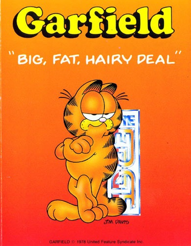
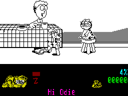
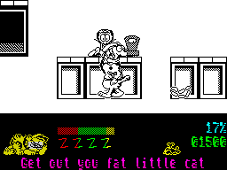

Garfield


{kind=link}

| Publisher: | The Edge |
| Price: | £8.99 |
| Year: | 1988 |
| Source: | CRASH, Issue 50 |

That fat, overblown, waddling, lazy scoundrel of a cat Garfield is out to do his good deed for the day — his feline friend Arlene has been taken to the local pound, and it’s all down to Garfield to pluck his true love from her imprisonment. But first he must get out of the house, and that won’t be easy.

Garfield, the comic-strip cat brought to the Spectrum screen for his tenth birthday (see panel), has two appetites — one for food and the other for rest. So this heroic ball of fluff must keep on consuming food, or he’ll become very tired, drop off to sleep and leave Arlene languishing in the pound.
But at least there’s more to eat than dry meal. There’s his ‘master’ Jon’s coffee, for a start; and later on Garfield can scoff a string of sausages and numerous other scraps. And this cat has a helpful digestive system — watch out for the Snack Attack warnings which appear periodically below the main screen. When there’s a Snack Attack on, the flabby beast can nosh practically anything.

Garfield can be helped or hindered by his ever-present pooch Odie. Our hero doesn’t really deserve this faithful dog as a friend — a well-aimed swipe at Odie earns points for the callous cat. Still, Odie doesn’t seem to mind this mistreatment, for he always bounds back for more.
Garfield can also get help from his nephew, Nermal, the cutest little kitten ever — if he can find him.
Now Garfield is not the most house-proud or best behaved of cats — given half a chance, he likes nothing better than to tear the best chair’s upholstery apart and add a stack of points to his collection. Still, the purple Dralon never did look too good on the three-piece suite, did it?
Messages at the foot of the screen keep up a running commentary, and useful objects lie around for Garfield to gather. There are newspapers, dog bowls, bones, towels and tin cans — but it takes some experimentation to find out what they’re used for.
And if he does make it out of the house into the bright light of day, Garfield will be distracted all the way to the pound by useful places such as butchers’ shops — in fact, they may prove so diverting that the fat cat never gets to free his long-suffering Arlene at all.
BIG, FAT, HAIRY LICENCE

graphics “very close to the comic-strip
originals”
COPYCAT CRIME took on a wacky new meaning in California this January, when 45 cars were broken into on a single weekend — and Garfield car stickers stolen from every one!
But the crying of distant car alarms is music to the ears of Garfield’s marketing men in Indiana, where the fat cat’s tenth birthday on June 18 is hyping Garfieldmania to new heights.
Garfield, born as the star of a still-running comic strip by Jim Davis, also appears on all kinds of merchandise including calendars, T-shirts, and cuddly toys.
‘Garfield is one of those rare characters that has a following from five to 95,’ explains The Edge’s Tim Langdell. ‘The average person knows Garfield.’
And plenty of them snuggle up to him every night — ‘when we were making the game a lot of people came out of the closet and admitted they had the cuddly toys,’ Langdell laughs.
But The Edge was duty bound to keep skeletons out of the comic-strip cat’s closet — there was ‘very firm guidance from above as to the image of Garfield,’ recalls Tim Langdell’s colleague and wife Cheri Langdell.
‘He can’t utter any profanities, he can’t really smash somebody or kill them — he’s got a sort of moral tone.’ The cute creature can’t die in the game, either — he just falls asleep (remember Piranha’s Yogi Bear, reviewed in Issue 47, where technically it isn’t the precious licensed character but you, the player, who dies?).
In the event, only one of The Edge’s proposed scenes was cut from Big, Fat, Hairy Deal — where Garfield was ‘using an instrument to do something that might be considered aggressive,’ says Tim Langdell.
And he hopes that despite the tight control, Big, Fat, Hairy Deal will have wider appeal than other recent character licences. ‘There’s been a large number of character licences,’ he observes, ‘almost all of which have been poorly received. There’s a lot more that can be done with a licence than’s been done so far.’
The perfect licence might need a 16-bit machine, says Tim Langdell, but he’s got high hopes for the Spectrum Garfield game. ‘It’s a very complex adventure,’ he enthuses, ‘and only bright teenagers and adult players will actually solve it. It’s pretty hard to do, but it won’t put off youngsters.’
After all, he says, ‘the strip cartoon isn’t aimed at kids’.
And the Langdells are so confident they’re backing a winner that more Garfield games are in the works already — with the cat’s creator, Jim Davis, helping out.
The first sequel could be out by April. And ‘we expect Big, Fat, Hairy Deal to be big till Easter,’ says Cheri Langdell. ‘Garfield will have a perennial popularity.’ So don’t leave him in the car.
CRITICISM
“Big, Fat, Hairy Deal is brilliant! It’s totally addictive, with perfectly-animated cartoon characters, jokes and surprises around every corner and the joy of kicking Odie up the rump every now and then. The excellent graphics have some really effective shading, and all that lets the game down is the lack of colour and sound — a tune would have cheered it up a bit. Our lasagne-loving friend leaps and bounds around the screen in a genuinely cat-like way with Odie following close behind — but if Odie touches Garfield the cat gets very tired, so the best idea is to give him the boot. There’s a serious aspect to the game, though, and the puzzles get more involving as you progress. This is a great game, full of fun and frolics, so get down to your local software shop and have a Big, Fat, Hairy Deal!”
NICK ... 92%
“Big, Fat, Hairy Deal captures exactly the combination of sardonicism and wit found in the cartoon strip. All the characters are superbly animated, making full use of the Spectrum’s high-resolution graphics; Odie is my favourite, bouncing happily around the screen with his tongue hanging out. And Garfield’s expressions are simply brilliant — he veers from wide-eyed surprise to a fantastic toothy grimace to a cynical grin. The monochromatic graphics suit the cartoon style perfectly (the colourful information panel detracts from it, if anything). And though some backgrounds lack detail, others — such as the park and the sewers — are very good. The messages really add to the atmosphere of humour and laziness, and it’s very satisfying to be able to kick Odie away if he’s bothering you! There are a couple of very minor faults: a bit of colour clash, and an inexplicable change of direction when you’re in the street. Forget them; though this is in a simple arcade adventure format, it’s been made into something really special.”
GORDON ... 89%
“This is a really good laugh! The graphics are very good; some of the characters and animations belong in On The Screen, though the monochrome display is a bit disappointing. Big, Fat, Hairy Deal is a must for Garfield fans, simply because it recreates the comic’s characters so well. Odie is very annoying — that’s true to the original, I suppose, but he does tend to get on the nerves more than he should. Still, there’s lots to do and I’m still trying to work out what loads of things can be used for. And the lack of sound is no problem when a game’s as addictive as this.”
MIKE ... 89%
COMMENTS
| Joysticks: | Cursor, Kempston, Sinclair |
| Graphics: | Very close to Jim Davis’s comic-strip originals; monochromatic playing area |
| Sound: | Nothing but walking effects |
| General rating: | Funny and addictive — with real arcade-adventure challenge as well as comic-strip slapstick |
| Presentation: | 90% |
| Graphics: | 89% |
| Playability: | 91% |
| Addictive qualities: | 90% |
| Overall: | 90% |